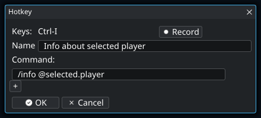
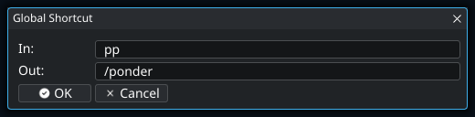
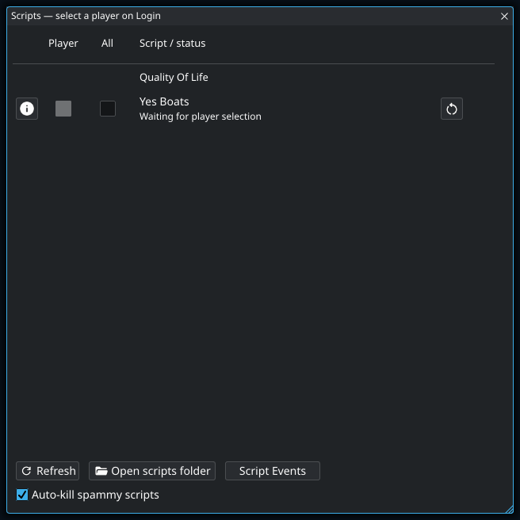
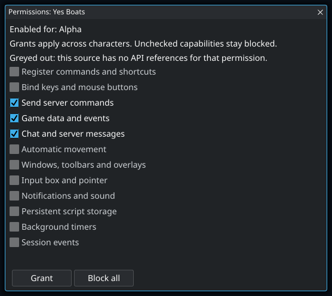
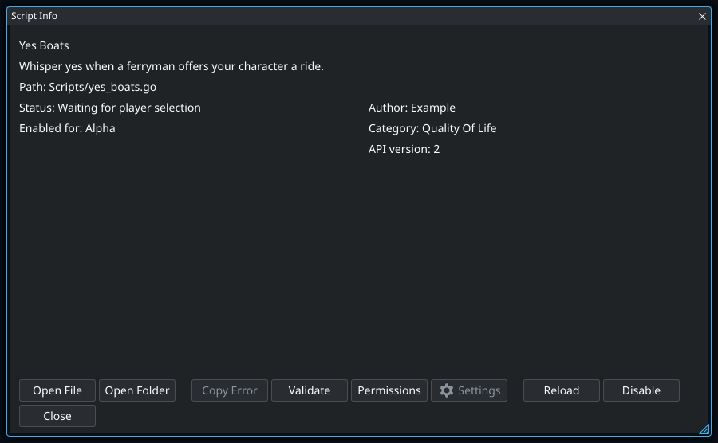
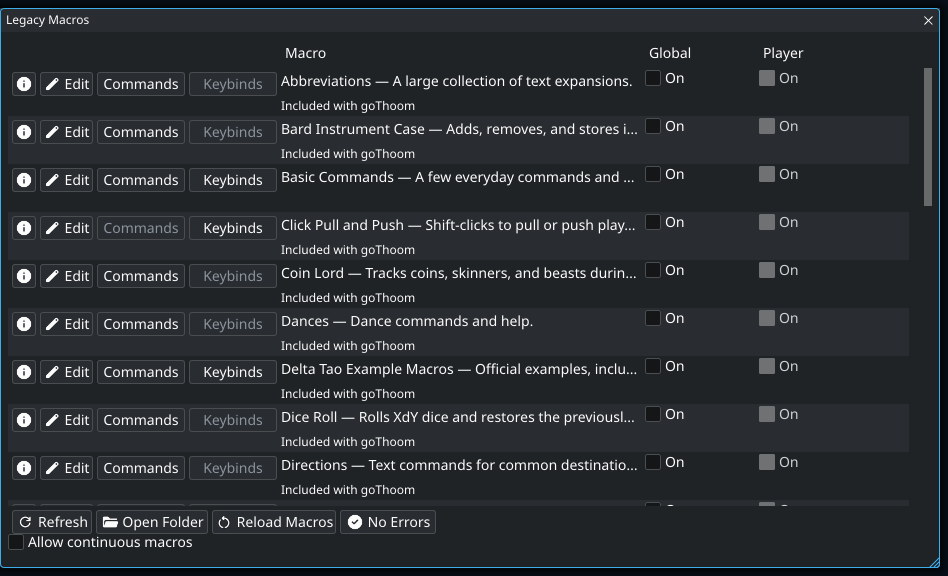
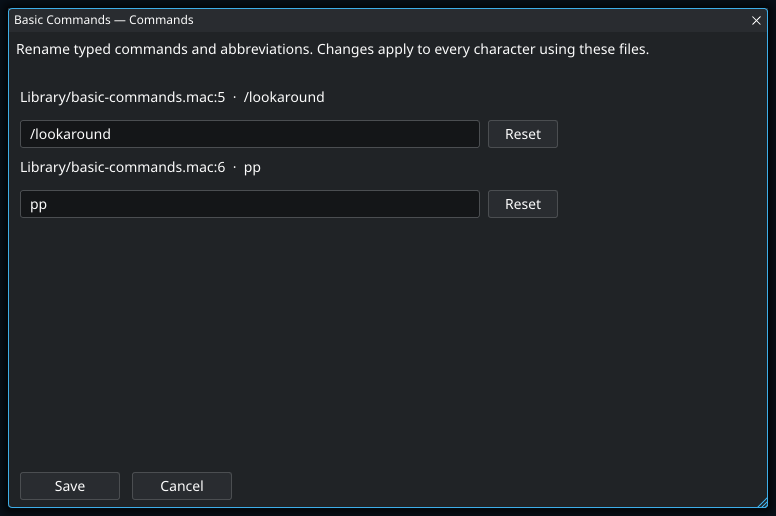
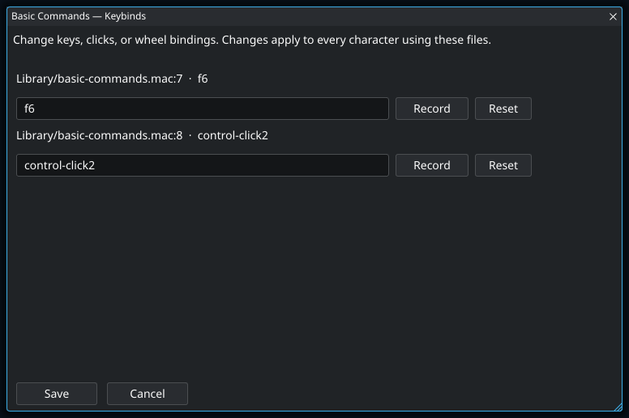

Choose an automation tool
Automate at the level you need
| You want to… | Use | Example |
|---|---|---|
| Run a command with a key | Hotkeys | Ask for information about the selected player. |
| Type a shorter first word | Shortcuts | Expand pp into /ponder. |
| React to events, track state, or create controls | Go scripts | Reply to a ferryman’s offer with Yes Boats. |
| Use an existing classic macro library | Legacy Macros | Load a familiar .mac package. |
Hotkeys
Open Actions → Hotkeys and press +. Give the hotkey a name, choose Record, press the desired keyboard or mouse combination, and add one or more commands. Script-provided hotkeys appear in the same window and can be individually enabled or disabled.
Use Actions → Keybindings to inspect active script and legacy-macro bindings in one place. Test Keyboard/Mouse shows the input names the client detects and helps diagnose unusual keyboards or mouse buttons.
Create a hotkey for the selected player
- Open Actions → Hotkeys and press +.
- Give it a recognizable name, such as “Info about selected player”.
- Choose Record and press the key combination you want.
- Enter
/info @selected.playeras the command and press OK. - Select someone in Players, then press your new binding while the client has focus.
- If the wrong action runs, inspect Actions → Keybindings for another owner using the same combination. Use Test Keyboard/Mouse to see the actual input names.
Context values are resolved when the action runs. A command using @selected.player needs a selected player; one using @selected.item needs a selected inventory item.

- 1
The selected player is resolved when you press the hotkey, not when you save it. This example can therefore inspect any player you select, using the same binding each time. It needs a selection in Players; the player beneath the pointer is a different context value.
Text shortcuts
Shortcuts expand the first word of an outgoing input line. For example, mapping pp to /ponder turns pp hello into /ponder hello. Shortcuts can be global, character-specific, or provided by a running script.
Create a shortcut for a longer command
- Open Actions → Shortcuts.
- Choose Add for character for one character’s expansion or Add For All for a shared expansion.
- Enter
ppas the shortcut and/ponderas the expansion, then save it. - In chat input, type
pp helloand send. Only the first word is expanded, producing/ponder hello.

- 1
Shortcuts expand the first word when you send a line. With this example, “pp hello” becomes “/ponder hello”; “hello pp” is not expanded. Choose a short word you are unlikely to start an ordinary message with by accident.
Go scripts
Open Actions → Scripts. The Player checkbox enables a script only for the selected character; All enables it for every character. These choices are mutually exclusive. The information button shows metadata, validation or runtime errors, and actions available for that package.
- Use Open scripts folder and add a single
.gofile, a package folder, or a ZIP package. - If the Scripts folder is empty, goThoom seeds it with embedded examples. Existing files are never overwritten.
- Press Refresh to rescan immediately. Enabled scripts normally reload when their files change.
- If a reload fails, inspect the script’s information panel and Console. The last working copy continues when possible.
Scripts can add commands, hotkeys, shortcuts, notifications, configuration fields, and toolbar controls. They run locally but can issue commands as your character, so read unfamiliar code before enabling it. Use Actions → Saved Data to inspect or clear script-owned persistent data.
For writing scripts, use the generated README.md and gt2/API_REFERENCE.md in the Scripts folder or read the online scripting guide. The release page also provides a VS Code script template.
Write a small local command
A script can respond to a local command without sending anything to the server. This is a useful first experiment because you can see whether the script loaded before adding game actions.
- In Scripts, use Open scripts folder. Create a plain-text file named
hello.goin your editor. - Paste this example and save it. Keep the build line as the first line.
//go:build script
package main
import "gt2"
const scriptID = "my-first-local-command"
const scriptName = "Local Greeting"
const scriptAPIVersion = 2
func Init() {
gt2.Command("hello", func(args string) {
gt2.Print("Hello " + args)
})
}- Refresh the Scripts list, enable Local Greeting, and review its command-registration permission.
- Log in, then type
/hello world. The response appears in Console. - Edit the greeting, save the file, and check the script’s status. Use Reload if needed, then try the command again.
gt2.Print writes local output. gt2.Send sends text or commands as your character and requires a separate server-command grant. Do not substitute one for the other when you only want to display a status message.
Keep a script’s ID stable when editing it: its saved settings and storage use that identity. Give a new, independent script a new ID. The script-author guide covers complete examples, and the API reference lists available functions and types.
Preferences, key bindings, and commands
Open a running script’s Info → Settings. The Preferences tab shows its options and whether each applies to all characters or the current character. Preference changes save immediately.
Use Key bindings to type or record a combination, or Commands to rename a local slash command. Choose Apply to save the edit or Reset to restore the script’s default. These assignments apply across characters and survive reloads and restarts. Conflicting assignments are rejected. Renaming a command keeps its arguments and action; update any personal macros or hotkeys that call its old name.
Enable a script and review its permissions
The screenshots use Yes Boats, a simple script that whispers “yes” when a ferryman’s boat offer mentions your character. It reads NPC messages and your character’s name, then sends the reply. Those actions explain why it requests chat, game-data, and server-command access.
- Open Actions → Scripts. Use Open scripts folder to add the file or package, then Refresh.
- Check Player for the character named in the window title, or All to enable it for every character.
- On first enable, review the permission window. Requested capabilities start checked. A greyed-out capability has no corresponding API reference in this source.
- Uncheck any requested capability you do not want to grant. Press Grant to save the choices, or Block all to deny access and disable the script.
- Log in to run an enabled script. Selecting it at Login configures enablement; it does not run there.
- Open the script’s Info → Permissions later to inspect or change access. Use Info to validate, reload, stop, or inspect errors.


- 1
Yes Boats sends a whisper as your character when it recognizes a boat offer addressed to you. This permission allows that reply; reading the offer and checking your character’s name require separate chat and game-data grants.
- 2
Grant saves only the checked capabilities, and the decision applies to this script across characters. Unchecking something does not automatically adapt the script: a feature that depends on the denied capability may no longer work. Reopen Info → Permissions to change your decision; Block all also disables the script.
Grants apply to that script across characters and are saved in Scripts/permissions.json. Enablement is stored separately in enabled.json. A partial grant may prevent some features from working; the script must be written to handle that.
| Permission | What you are allowing |
|---|---|
| Register commands and shortcuts | Add commands and first-word expansions inside the client. |
| Bind keys and mouse buttons | Respond to bindings and consume their input. |
| Send server commands | Send text or commands as your character, including equipment actions. |
| Game data and events | Read players, inventory, selections, vitals, and visible scenery updates. |
| Chat and server messages | Read incoming messages, including private messages. |
| Automatic movement | Steer the character through the movement pointer. |
| Windows, toolbars and overlays | Create local controls and draw overlays. |
| Input box and pointer | Inspect the pointer and read or replace unsent input. |
| Notifications and sound | Show notifications or play sounds. |
| Persistent script storage | Keep that script’s saved values between sessions. |
| Background timers | Run repeating callbacks without a command or hotkey. |
| Session events | React to login, logout, character changes, and stopping. |
Know what a script can remember
Normal Go variables belong to the running script instance. Saved configuration and values deliberately written through gt2.Store can outlive that instance. Use Actions → Saved Data to inspect script-owned persistent values when troubleshooting a script that keeps restoring an unexpected choice.
Stored values are private to one script but shared across its characters. For a reminder belonging to one character, authors can use gt2.CharacterStore() or include that character’s normalized name in an ordinary storage key. Read character-specific data only after the character is known. A repeating timer does not survive logout or a restart; save a due date and check it in the next session if the reminder must survive.
Understand when scripts run and stop
Enabled scripts start when you log in and stop when you log out. Your next login starts a new instance. Use persistent storage for values that need to survive between sessions.
Only data deliberately saved through script storage persists. That storage is private to the script but shared across its characters; script authors can use gt2.CharacterStore() or character-specific keys for character-specific data. For authoring details, read the scripting guide and API reference.
Recover from a script error
- Open the script’s Info panel and read the status and error. Copy Error helps include the exact message in a report.
- Use Validate to check the source. Correct syntax or API problems before retrying.
- If status says permissions are required, use Permissions to review the current source’s access.
- Use Reload when enabled. A failed reload can leave the older working copy running; the status says when that happened.
- Use Stop to disable the script if it is not behaving as expected. Log out to end all session scripts.

- 1
A reload can fail while the previous working copy continues running. Read the status and error before assuming your edited code is active. Validate can help find source problems; if the change requests additional access, review Permissions before trying again.
Legacy macros
Open Actions → Legacy Macros. Like scripts, a macro can be enabled for the selected player or globally. Use the information button for its description and diagnostics, Refresh after adding or renaming files, and Reload Macros after editing enabled macros.
Add personal .mac files to Macros/Library in the user data directory. Embedded examples populate an empty library without replacing your work. Leave Allow continuous macros off unless a trusted classic macro intentionally loops without pausing or producing output; the default execution limit protects the client from runaway macros.
Install an existing legacy macro
- Open Settings → Files → Open User Data Folder and locate
Macros/Library. If you configured an alternate macro folder, use that location. - Copy the macro’s
.macfile and any accompanying files into the library, preserving relative folder paths. An include file is part of the package, not necessarily a second macro to enable. - Open Actions → Legacy Macros and use Refresh so new or renamed files appear.
- Open its information panel. Read the description and available diagnostics, then enable it for the intended player or for all players.
- Try the trigger named in the macro’s documentation. If a binding collides with a hotkey or script, use Actions → Keybindings to inspect its owner.
Refreshing the library and reloading active macros solve different problems. Refresh discovers files; use Reload Macros after changing the contents of an enabled macro. If the package cannot load, examine its information panel and Console rather than repeatedly pressing its trigger.
Change a macro’s commands or keybindings
Use Commands or Keybinds on a row in Actions → Legacy Macros. Commands edits what you type to start a macro or expand an abbreviation; it does not change the text sent by the macro. Keybinds changes which key, mouse button, or wheel action starts it.

- Open the editor for the macro you want to customize. Each entry shows its current trigger and source file. Included files can be shared by several macros, so changes to those files affect every macro that includes them.
- For a command, edit the trigger text. For a keybinding, click Record, release the click, then press the replacement key or click with the desired modifiers. Escape cancels recording; you can also type a binding such as
Control-F6directly. - Use Reset to undo an unsaved change to one entry, or Cancel to discard all edits in the window.
- Press Save. The client validates the edited source, rejects conflicting triggers within the macro and its includes, saves the changes, and reloads enabled macros. If another editor changed the files while this window was open, reopen the window before trying again.
Changes apply to the macro file for every character using it. Comments, macro bodies, and surrounding formatting stay in place. Use the row’s Edit button when you want to change what the macro actually does.
Mac key names in bindings
Legacy macros use command, control, numpad, option, and shift. Join modifiers and the key with hyphens, such as command-option-f6. Names are case-insensitive. Hotkeys and Go script bindings use Meta, Ctrl, Alt, and Shift; Command and Cmd also work for Meta there.
Legacy macro key names follow the Mac keyboard: delete means Backspace, del means forward Delete, return is the main Return key, and enter is keypad Enter (numpad-enter also works). clear is an alias for Escape; use numpad-clear for the keypad Clear key (Num Lock on PC keyboards). The numpad modifier distinguishes keypad digits from the number row.
Option and Shift may produce a different character: a legacy binding such as option-µ uses the character produced by that keyboard layout. Use Record to capture the combination on your keyboard.


Make a one-key macro
Save the following plain text as look.mac inside your macro library:
// Metadata
// Name: Look Around
// Desc: Sends /look when F6 is pressed.
f6 "/look\r"Refresh the library and enable Look Around. While connected, F6 sends /look. The trigger is outside the quotes; the quoted text is what the macro enters. The \r at the end submits the line. If you want to review or add to a line before sending it, leave off that final submit sequence.
The metadata comments make the entry identifiable in the library. They do not change execution. Use a free binding while testing, and edit or disable this example if you already use F6 for another action. The metadata format and bundled examples provide starting points for a larger package.
Why a looping macro may be stopped
Some old macros deliberately loop without waiting or producing output. The client normally limits that behavior to avoid an unresponsive or runaway macro. Enable Allow continuous macros only when you understand why a particular package needs it. A macro failing immediately with a syntax or missing-include error is not fixed by allowing continuous execution.
Find why an action did not run
| Symptom | What to check |
|---|---|
| The key runs a different action | Inspect Actions → Keybindings. Check the owner and look for a legacy macro, script, or hotkey using the same input. |
| The key is never recognized | Focus the client and use Test Keyboard/Mouse. Record the name the client receives; physical key labels and detected input names can differ. |
| The wrong player or item is used | Check whether the command uses selected, hovered, or last-clicked context. Those are different values. |
| The script is enabled but idle at Login | That is expected: scripts run after a successful login. Confirm Player applies to the character you intend to connect. |
| Only part of a script works | Review permissions and the script’s configuration. Registering a command, reading game data, moving, and sending server text are separate capabilities. |
| Editing a macro changes nothing | Reload Macros after saving. Refresh is for discovering files. For Go scripts, read Info for reload errors and whether the old copy is still active. |
When reporting a problem, include the package name, trigger, selected character, permissions relevant to the feature, and the exact error. The diagnostics guide explains where to find logs.